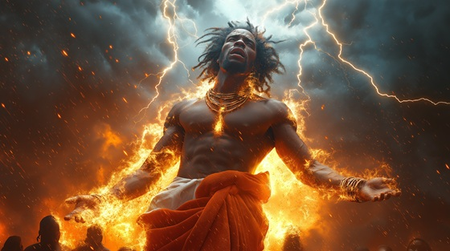

This is the moment where myth becomes religion — where Shango, the mortal king of Oyo, is no longer flesh, but divine force.
In Yoruba belief, Shango is resurrected as an Orisha, a spirit of lightning, fire, and justice. He is invoked in ritual, he possesses his followers through trance, and he judges the guilty with thunderstones.
No longer bound to a throne or kingdom, Shango becomes part of the sky. He is worshipped across continents, in West Africa and throughout the Diaspora. His legacy becomes cosmic, eternal.
He did not return to rule. He returned to burn falsehood, to protect the truth, and to dance in stormlight.
Orisha Reborn
The sky broke wide, the drums returned,
The ash caught fire, the spirits churned.
No grave could hold what lightning made—
He rose in storm, his soul relayed.
From whispered dust to roaring flame,
He came not back — but not the same.
Orisha reborn, thunder crowned,
He walks the clouds, he shakes the ground.
No longer man, no longer chained—
His name is storm. His voice remains.
The priests fell down, the winds took form,
His symbol danced in sacred storm.
His name was sung with fear and praise,
A god awakened from the blaze.
The world now knelt, the sky obeyed—
And every oath by fire was made.
Orisha reborn, thunder crowned,
He walks the clouds, he shakes the ground.
No longer man, no longer chained—
His name is storm. His voice remains.
He speaks in bolts, he breathes in flame,
He’s called through dance, through war, through pain.
His eyes are drums, his blood is sky,
He judges falsehood with a cry.
He’s not returned to wear the crown—
He is the storm that strikes it down.
Orisha reborn, thunder crowned,
He walks the clouds, he shakes the ground.
No longer man, no longer chained—
His name is storm. His voice remains.
Born again through sacred flame,
His soul ignites the Orisha name.
A god not made, but called by fire—
And now the sky shall never tire.
“Shango o! Aṣé! Thunder walks again.”